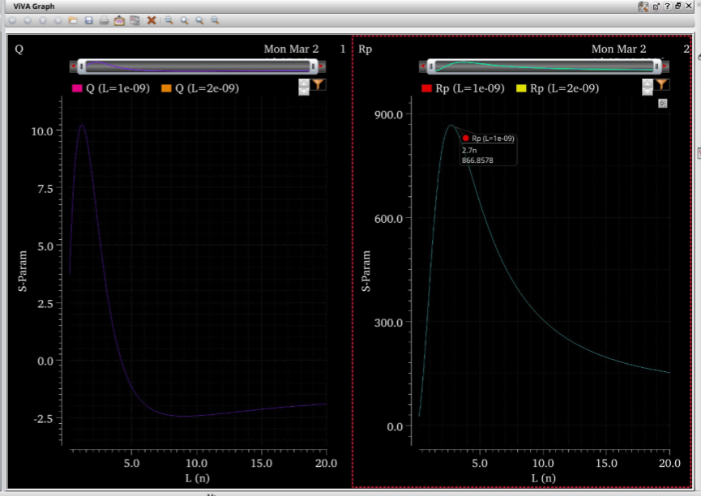
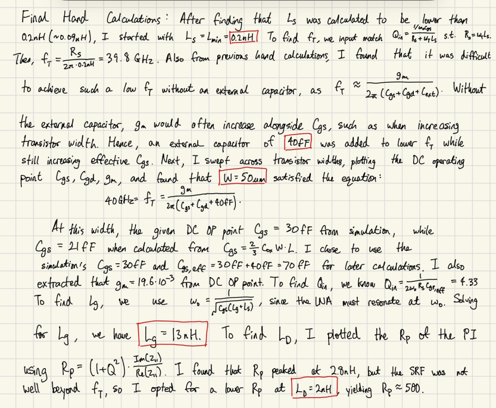
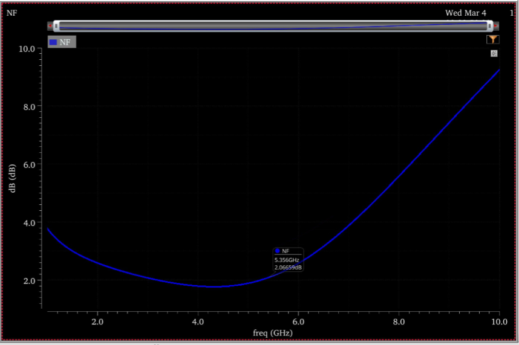
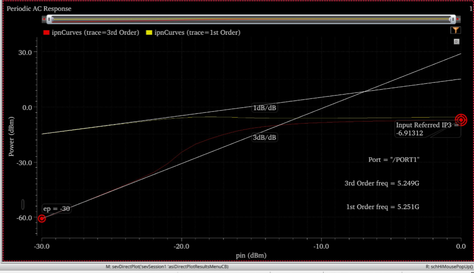
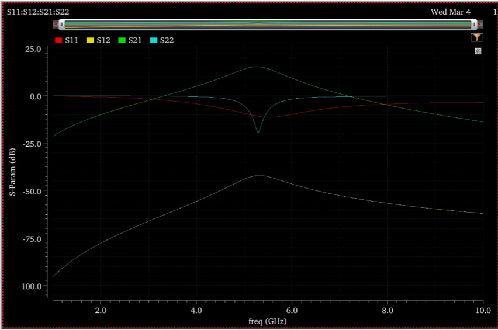
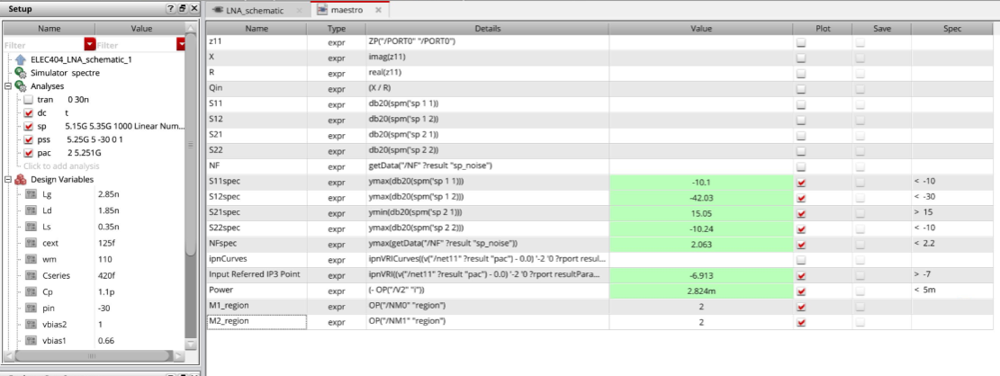

1. Introduction
This report presents the design and simulation of a 5.25 GHz fully integrated CMOS LNA in a 45 nm process. The required specifications include $|S_{11}| < -10$ dB, $|S_{21}| > 15$ dB, $\mathrm{NF} < 2.2$ dB, and $\mathrm{IIP3} > -7$ dBm over $f_c \pm 100$ MHz, with $V_{DD}=1.0$ V and $C_L=50$ fF. A common-source LNA with inductive source degeneration and resonant load is chosen to balance gain, input matching, noise, bandwidth, linearity, and power.
2. Specifications and Design Targets
| Metric | Requirement | Condition |
|---|---|---|
| Center frequency | $f_c = 5.25$ GHz | — |
| Input match | $|S_{11}| < -10$ dB | $f_c \pm 100$ MHz |
| Output match | $|S_{22}| < -10$ dB | $f_c \pm 100$ MHz |
| Reverse isolation | $|S_{12}| < -30$ dB | $f_c \pm 100$ MHz |
| Forward gain | $|S_{21}| > 15$ dB | $f_c \pm 100$ MHz |
| Noise figure | $\mathrm{NF} < 2.2$ dB | $f_c \pm 100$ MHz |
| Linearity | $\mathrm{IIP3} > -7$ dBm | 2-tone, 1 MHz spacing |
| Power | Minimize power consumption | — |
| Load capacitance | $C_L = 50$ fF | — |
| Supply | $V_{DD} = 1.0$ V | — |
3. Architecture and Small-Signal Overview
The implemented LNA uses source degeneration ($L_S$) and input reactance tuning for 50 $\Omega$ input matching. The output load is formed by on-chip inductor $L_D$ resonating with total output capacitance (including $C_L$), creating an effective parallel resistance $R_p$ near $f_c$ that sets gain. A cascode device improves reverse isolation $|S_{12}|$ and reduces Miller feedback.

4. Design Methodology (First-Pass Values)
4.1 Load Network First: Maximizing $R_p$ and Verifying SRF
The load network is designed first because at resonance the gain can be approximated by:
The inductor is modeled with PDK parasitics and the required $C_L = 50$ fF is included. From SP analysis, $Z_{11}$ is extracted and quality factor is computed by:
At resonance, the effective load resistance is approximated by:
First-pass selection: $L_D = 2$ nH, SRF $= 10.3$ GHz, and $R_p \approx 500\ \Omega$ at $f_c$.

4.2 Required $g_m$ from Gain Target ($|S_{21}|$)
The first-pass linear gain target is:
So the required transconductance estimate is:
4.3 Input Matching and Input Quality Factor $Q_{in}$
To satisfy $|S_{11}| < -10$ dB, input network tuning targets $Z_{in} \approx 50\ \Omega$ at $f_c$. With inductive source degeneration, the real part of $Z_{in}$ is primarily controlled by $L_S$ and effective $g_m$.
- Choose $L_S$ so $\Re\{Z_{in}\} \approx 50\ \Omega$ near $f_c$.
- Tune gate reactance ($L_G$ and input capacitances) so $\Im\{Z_{in}\} \approx 0$ at $f_c$.
4.4 Output Matching ($|S_{22}|$) and Reverse Isolation ($|S_{12}|$)
Output matching is achieved by tuning load resonance and matching elements so $Z_{out} \approx 50\ \Omega$ at $f_c$ while preserving gain. Reverse isolation is improved using cascode action and bias decoupling with a target of $|S_{12}| < -30$ dB.
For first-pass output matching values, $C_s$ and $C_p$ were tuned through Cadence sweeps instead of full hand derivation.

4.5 Cadence Simulation Tuning
Initial hand-calculated values did not meet all S-parameter specs. Reducing $L_g$ from 13 nH to about 4 nH moved $S_{21}$ and $S_{11}$ peaks near 5.25 GHz. Final tuning was then completed by iterating component values and observing their effect on specifications.
| Parameter | Final Value |
|---|---|
| $L_g$ | 2.85 nH |
| $L_d$ | 1.85 nH |
| $L_s$ | 0.35 nH |
| $C_{ext}$ | 125 fF |
| $W_m$ | 110 |
| $C_{series}$ | 420 fF |
| $C_p$ | 1.1 pF |
| $V_{bias2}$ | 1.0 V |
| $V_{bias1}$ | 0.66 V |
4.6 Noise Figure
The most effective changes for reducing NF were increasing transistor width and decreasing $L_g$. Noise summary analysis showed inductor loss in $L_g$ as a dominant noise contributor. Increasing width from 50 µm to 110 µm and reducing $L_g$ from 4 nH to 2.85 nH moved NF well within spec.

4.7 Two-Tone Linearity and $\mathrm{IIP3}$ Extraction
Two-tone test setup:
IIP3 was extracted at input power of -30 dBm where fundamentals still follow 1 dB/dB slope and IM3 terms follow 3 dB/dB slope, indicating operation in the expected weakly nonlinear region before gain compression. The measured result was $\mathrm{IIP3} = -6.9$ dBm, within spec.

4.8 Power Minimization
DC power is given by:
After all specs were met, $I_{DD}$ was reduced as much as possible by reducing width while re-verifying $|S_{21}|$, $|S_{11}|$, $|S_{22}|$, NF, and IIP3 at each step. Final power was minimized to 2.8 mW.
4.9 S-Parameters Plot

5. Final Results

5.1 Operating Point Summary
| Device | $W$ | $L$ | $I_D$ | $V_{GS}$ | $V_{DS}$ | $g_m$ |
|---|---|---|---|---|---|---|
| $M_1$ | 110 µm | 45 nm | 2.82429 mA | 654.31 mV | 323.988 mV | 33.49 mS |
| $M_2$ | 110 µm | 45 nm | 2.82429 mA | 670.794 mV | 661.526 mV | 35.0248 mS |
5.2 Specification Compliance
| Metric | Spec | Achieved |
|---|---|---|
| $|S_{11}|$ | < -10 dB | Achieved |
| $|S_{21}|$ | > 15 dB | Achieved |
| $|S_{12}|$ | < -30 dB | Achieved |
| $|S_{22}|$ | < -10 dB | Achieved |
| NF | < 2.2 dB | Achieved |
| IIP3 | > -7 dBm | Achieved |
| $P_{DC}$ | Minimized | 2.8 mW |
6. Conclusion
A 5.25 GHz CMOS LNA was designed and simulated in a 45 nm process. The final circuit meets all key specifications, including gain, input/output matching, reverse isolation, noise figure, and linearity over $f_c \pm 100$ MHz. The design achieves approximately 2.0 dB noise figure, $\mathrm{IIP3} \approx -6.9$ dBm (1 MHz two-tone spacing), and total power consumption of about 2.8 mW from a 1.0 V supply.